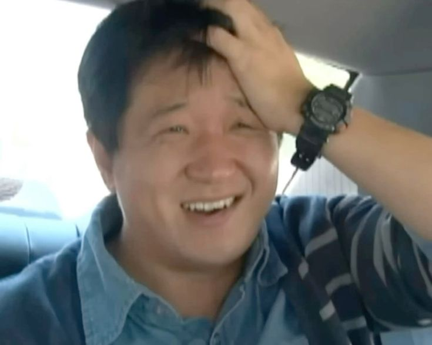
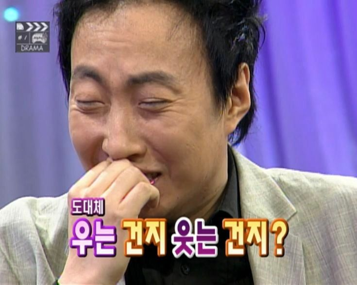

나는 내가 딱히 엄청난 계획형 인간이라고 생각하지는 않는다.
평소엔 그냥 되는 대로 살고, 집에서는 침대와 한 몸이 되어 숨쉬기 운동만 즐기는 전형적인 MBTI P유형. 말그대로 귀차니스트이다.
하지만 해외여행 이라는 이벤트 앞에서 난, J 100%인간으로 돌변한다.
낯선 땅에 던져진다는 긴장감 때문인지 30분 단위로 동선을 짜지 않으면 불안해서 견딜 수가 없기 때문이다.
지난달 친구와 떠난 도쿄 여행도 그랬다. 맛집 리스트부터 환전, 지하철 몇 번 칸에서 내려야 출구가 가까운지까지...
거의 <국제 미아 방지 전략>을 짜듯 꼼꼼하게 정리해 갔다.
"그래, 이 정도면 길 잃고 헤메일 일은 없을거야"라는 소박한 안도감이 들었고,
다행히 한국으로 돌아오는 마지막 날 아침까지는 모든 것이 순조로웠다.
내가 묵었던 숙소에서 공항으로 가는 가장 빠른 방법은 공항행 기차 '스카이라이너'를 타는 것이다.
물론 이 기차표 또한 여행 시작 전 미리 예매했다.
공항까지 나를 쾌속으로 쏴줄 이 기차표를 미리 사둘 때까지만 해도 내 계획이 한 치의 오차도 없이 완벽한 줄 알았다.
그런데 개찰구에 도착하자마자 역무원 아저씨가 청천벽력 같은 소리를 내뱉는 것이다...
(스카이라이너는 만석입니다~)
아니, 기차가 만석이라니? 난 분명 표를 샀는데?
순간 당황해서 뇌 정지가 왔지만, 본능적으로 역무원에게 달려가 0.5개 국어 수준의 일본어로 말을 와다다 쏟아냈다.
와타시 스카이라이나니 노리타이데스! 치켓토모 못테이마스!
(스카이라이너 타고싶어요! 티켓도 있어요!)
하지만 돌아온 대답은 냉정했다. "자리 없으니 일반 지하철 타고 가세요." 그래, 지하철이 있다는 건 다행인데...
문제는 시간이었다. 기차를 타면 비행기 출발 2시간 전 도착인데, 지하철을 타면 출발 1시간 전 도착이다.
이때부터 내 심장은 비트박스를 치기 시작했다.
이런 저런 방법을 급하게 찾아봤지만, 별다른 방법이 나오지 않았다. 어쩔 수 없이 지하철을 타고 공항으로 향했고, 공항에 도착했다. 시계를 보니 정확히 출발 1시간 전. 식은땀을 닦으며 '휴, 그래도 비행기 꼬리는 잡겠네'라는 안도감과 함께 짐을 맡기러 캐리어를 끌고 승무원에게 돌진했다.
3분.
컵라면 하나 익을 시간 때문에 내 30인치 캐리어와 생이별하게 생긴 것이다. 해외여행을 여러번 다녔지만, 항상 부모님이 척척 해결해 주시던 수하물 수속이 이렇게 거대한 벽처럼 느껴진 건 처음이었다.
이 거대한 공항에 나 혼자 덩그러니 남겨진 기분. 낯선 천장의 나리타 공항이 나를 비웃는 것 같았다.
'지금 승무원 앞에서 무릎이라도 꿇을까?' 하는 말도 안 되는 생각이 머릿속을 스쳤다. 안그래도 바닥난 내 멘탈은 바닥을 뚫고 지하로 내려가기 시작했다.
옆에서 같이 넋이 나간 친구가 겨우 입을 뗐다. "야... 그냥 이거 버리고 다음 비행기 예약하자. 몸만 갈 순 없잖아."
친구의 말은 합리적이었지만, 내 뇌가 거부하는 느낌이었다. 손을 바들바들 떨며 예매 창을 켰다. 화면에 뜬 숫자는...

내 피 같은 돈이 허공으로 날아가는 소리가 들렸다. 부모님 찬스 없이 내 용돈 탈탈 털어온 '거지 여행자'에게 40만 원은 사망 선고나 다름없었다.
'아, 내 피 같은 돈... 내 영혼 같은 알바비...' 눈시울이 뜨거워졌지만 선택지가 없었다. 다른 방법을 찾기엔 내 두뇌회전은 이미 멈췄고, 비행기는 나를 기다려주지 않는다. 결국 눈물을 머금고 결제 버튼을 눌렀다.
딸깍.
내 지갑이 비명을 지르는 소리가 공항 전체에 울려 퍼지는 듯했다.. 내 인생에서 가장 무거운 '클릭'이었다.
마치 폭풍이 휩쓸고 지나간 것처럼 온몸이 너덜너덜해졌다.
친구와 나는 돈은 돈대로 나가고 기력은 바닥난 상태로 공항 구석에서 제일 싼 밥을 찾아 꾸역꾸역 입에 넣었다.
평소 같으면 이런 저런 이야기를 하며 수다를 떨었겠지만, 그날은 오직 숟가락 부딪히는 소리만 들리는 적막 속에서 밥만 퍼먹었다. 밥알을 씹는 게 아니라 40만 원짜리 자본주의의 쓴맛을 씹는 기분이었다. 정말 썼다...

지금이야 웃으며 말하지만, 당시의 나에게는 머릿속이 하얘지고 식은땀이 흐를 정도의 대참사였다.
이 비싸고 혹독한 교육을 통해 얻은 교훈은 딱 하나다.
시간 여유를 넉넉히 가지고 도착한다면 이런 일은 없겠지ㅠㅠ...
정말 다시는, 절대로 겪고 싶지 않은, 내 인생에서 가장 비싼 참교육 이벤트였다.